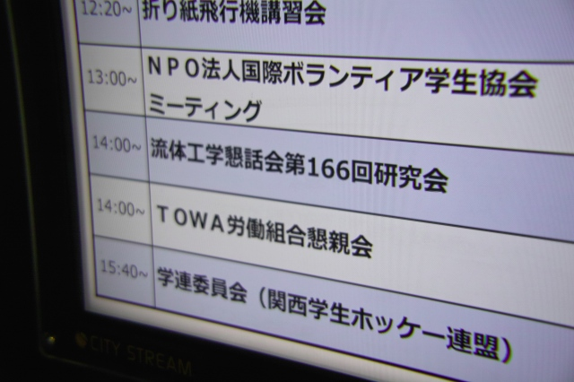
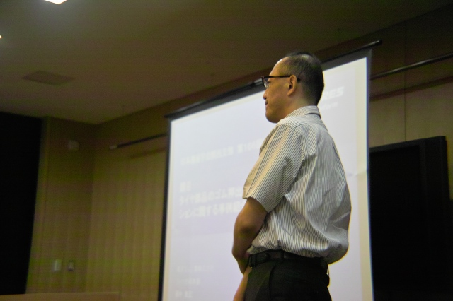

| ・ 流体工学懇話会第166回研究会＠キャンパスプラザ京都 (H24.08.04) | |||
村田先生（代表）と助教の人（幹事）で、流体工学懇話会の第166回研究会を開催しました。今年の3月に講演会をやりましたが、今年度最初の講演です。毎度の事ですが、なかなか高度な議論になりました。勉強になります。 |
|||
|

キャンパスプラザ京都 |
村田先生挨拶中 | ||
|
後藤田 浩先生「密度差を伴う旋回噴流の渦崩壊現象」 |

田中 嘉宏先生「タイヤ部品のゴム押出し工程の流動シミュレーションに関する事例紹介」 | ||
|
爆弾三勇士か |
|||